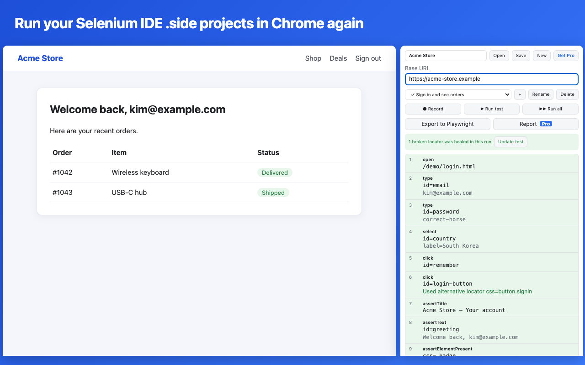
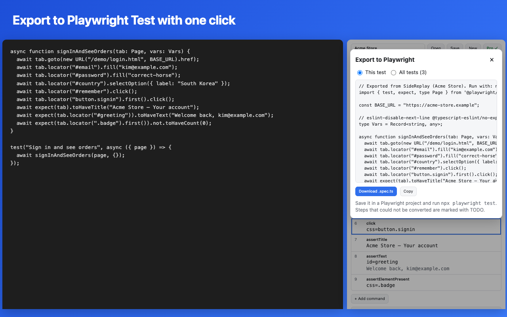

Selenium IDE is gone from the Chrome Web Store. SideReplay opens your existing .side projects and runs them in Chrome, fixes locators that broke, and turns your tests into Playwright code when you are ready to move on.

All 93 Selenium IDE commands, including if/while/times/forEach, alerts and prompts, iframes, new windows and scripts. Old command names are converted for you.
Click, type, press Enter and pick from lists. SideReplay writes the steps, follows you into iframes and new tabs, and saves several locators for every element.
When a page changes and a locator breaks, SideReplay tries the other locators it saved, tells you which one worked, and updates the test with one click.
Turn a whole project into a readable Playwright Test file. Assertions, loops, frames, windows and dialogs are converted. Anything unusual is marked TODO.
Download a single HTML file with every step, result and error message to attach to a bug or send to your team.
Your tests stay in your browser. No account, no tracking, no servers of ours. Only a Pro license key is checked with our payment provider.

No. SideReplay is an independent tool that reads the Selenium IDE file format. Selenium is a trademark of the Software Freedom Conservancy.
Yes, files saved by Selenium IDE 3.x and 4.x open directly, including control flow, dialogs, frames and windows. If a step cannot run, SideReplay tells you before the test starts.
Yes. Chrome asks you to allow it once: open chrome://extensions, click Details on SideReplay and switch on "Allow User Scripts".
No. Projects are stored in your browser. See the privacy policy.
After checkout you receive a license key by email. Open SideReplay, click "Get Pro" and paste the key. Manage or cancel your subscription any time from the link in the same email.
Yes. If Pro is not for you, email us within 14 days of purchase for a full refund.